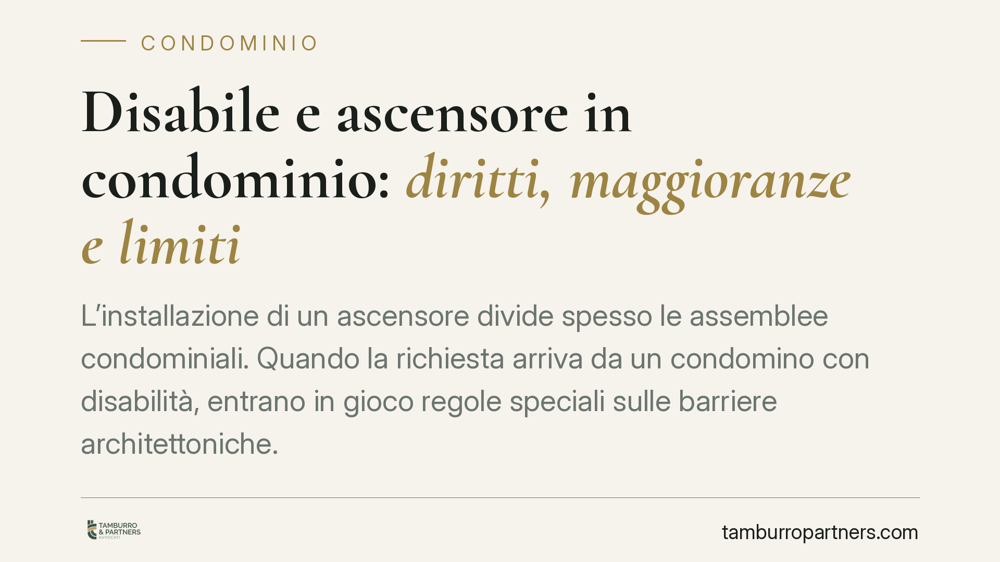

Disabile e ascensore in condominio: diritti, maggioranze e limiti
L'installazione di un ascensore divide spesso le assemblee condominiali. Quando la richiesta arriva da un condomino con disabilità, entrano in gioco regole speciali sulle barriere architettoniche. Vediamo quali maggioranze servono, cosa può fare il singolo se l'assemblea resta inerte e quali limiti il decoro e la sicurezza pongono all'intervento.

Il quadro normativo
L'abbattimento delle barriere architettoniche è un'opera di innovazione "agevolata". L'art. 1120, comma 2, c.c., nella versione introdotta dalla riforma del condominio (L. 11 dicembre 2012, n. 220), include espressamente tra le innovazioni che l'assemblea deve favorire quelle dirette a eliminare le barriere architettoniche.
Per queste opere la legge abbassa il quorum. L'art. 1120, comma 2, c.c. rinvia alla maggioranza prevista dall'art. 1136, comma 2, c.c.: è sufficiente il voto favorevole della maggioranza degli intervenuti in assemblea che rappresenti almeno la metà del valore dell'edificio (500 millesimi). Non serve dunque la maggioranza qualificata richiesta per le innovazioni ordinarie.
A questo si affianca la disciplina speciale della L. 9 gennaio 1989, n. 13. L'art. 2 prevede che, quando l'assemblea non delibera entro tre mesi dalla richiesta scritta, i portatori di handicap (o chi li ospita stabilmente) possano installare a proprie spese l'impianto o le strutture necessarie. Si tratta di una tutela pensata per evitare che l'inerzia o l'ostruzionismo dei condòmini blocchi un diritto di rango costituzionale.
La facoltà del singolo condomino
La possibilità per il singolo di installare l'ascensore a proprie spese non si fonda solo sull'art. 2 L. 13/1989. La giurisprudenza e la dottrina la ricollegano anche all'art. 1102 c.c., che consente a ciascun condomino un uso più intenso della cosa comune, purché non ne alteri la destinazione e non impedisca agli altri un pari uso.
Su questa base, il condomino interessato può realizzare l'impianto nel vano scala o in altra area comune, sopportandone i costi, ferma restando la possibilità per gli altri condòmini di partecipare in un secondo momento, contribuendo pro quota alle spese.
Decoro architettonico e sicurezza: due limiti diversi
Il filo conduttore in materia è la distinzione tra due limiti. Il decoro architettonico dell'edificio è un valore tendenzialmente recessivo rispetto al diritto alla mobilità del disabile: l'orientamento consolidato ammette che l'opera possa incidere sull'estetica del fabbricato, entro limiti di ragionevolezza, quando ciò sia necessario a garantire l'accessibilità.
Diverso è il limite della sicurezza e stabilità del fabbricato. Qui non vi sono deroghe: un intervento che comprometta la statica dell'edificio o renda inagibili parti comuni essenziali non è consentito, nemmeno in presenza di una disabilità. Il diritto all'accessibilità trova in questo caso un confine invalicabile.
Questa impostazione corrisponde all'orientamento di legittimità più volte ribadito. Segnaliamo che vanno sempre verificati gli estremi esatti delle pronunce citate nei singoli casi, poiché la giurisprudenza è in costante evoluzione.
Implicazioni pratiche
Per l'amministratore, la richiesta di installazione impone di convocare l'assemblea con sollecitudine: l'inerzia oltre i tre mesi apre la strada all'iniziativa autonoma del singolo e può generare contenzioso.
Per i condòmini contrari, è bene sapere che il semplice richiamo al decoro raramente è sufficiente a bloccare l'opera. L'opposizione regge, in genere, solo quando sono in gioco la sicurezza o la stabilità dell'edificio.
Per il condomino con disabilità, la legge offre strumenti concreti, ma occorre formalizzare correttamente la richiesta e documentare la necessità dell'intervento.
Sul piano economico, se l'opera è deliberata dall'assemblea, la spesa si ripartisce per millesimi secondo le regole ordinarie. Se invece l'impianto è realizzato dal singolo a proprie spese, il costo resta a suo carico, salvo successiva adesione degli altri condòmini.
Cosa fare in concreto
- Formalizzate la richiesta per iscritto all'amministratore, chiedendo l'inserimento del punto all'ordine del giorno e documentando la condizione di disabilità.
- Verificate il quorum applicabile (art. 1120, comma 2, e art. 1136, comma 2, c.c.) prima dell'assemblea, per impostare correttamente la votazione.
- Monitorate il termine di tre mesi ex art. 2 L. 13/1989: decorso inutilmente, valutate l'installazione a proprie spese.
- Acquisite una relazione tecnica che attesti la compatibilità dell'opera con la sicurezza e la stabilità del fabbricato: è il nodo su cui si gioca la legittimità dell'intervento.
- Conservate ogni comunicazione con l'amministratore e i condòmini, per documentare la tempistica e l'eventuale inerzia dell'assemblea.
---
Contributo informativo a cura di Tamburro & Partners - Avv. Giuseppe Tamburro. Non costituisce parere legale.
Ogni condominio ha una storia a sé.
Se gestisci un'amministrazione e vuoi un confronto su una specifica questione condominiale, scrivi allo studio. Ti rispondiamo entro un giorno lavorativo.